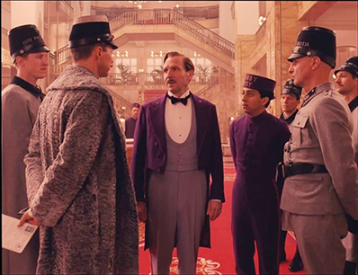

Eddie Redmayne and Birdman pull ahead in Oscars race
Eddie Redmayne pulled ahead of his rivals in the race for the best actor Oscar when he won a Screen Actor’s Guild award for his role as Stephen Hawking in The Theory of Everything on Sunday night. The 32-year-old actor beat rivals Benedict Cumberbatch, Steve Carell, Jake Gyllenhaal and Michael Keaton to the prize for male actor in a leading role at the ceremony in Los Angeles.
The Guardian
Jan 27, 11:15 pm
Los Angeles
Weekend Scrambles Top Oscar Prospects
An unexpected double win for Alejandro G. Iñárritu’s “Birdman,” at the expense of Richard Linklater’s “Boyhood,” jolted the Oscar race over the weekend, even as Harvey Weinstein made a bid to enhance his own contender, “The Imitation Game,” as a filmic standard-bearer against past injustices directed at gays.
The New York Times
Jan 28, 4:30 pm
Los Angeles
From 'American Sniper' to 'Whiplash' and everything in between
This year’s Oscars nominations were announced Thursday morning and, despite a few snubs and surprises, the Best Picture nominees were mostly the usual batch of well-received prestige pics—though they also received reviews that weren’t always 100% positive.
Time
Jan 28, 1:30 pm
New York
87th Academy Awards Nominations
The 2015 Academy Award nominations were announced this morning, and for the first time ever all 24 nominations were broadcast live. The nominations were announced by directors J.J Abrams and Alfonso Cuarón, Chris Pine, and Academy President Cheryl Boone Isaacs...

Mike Williams
Jan 26, 4:30 pm
Showing the Smarts to Play the Genius
With his wide forehead and high cheekbones, Benedict Cumberbatch has been compared, and not unreasonably (especially if you’ve seen him in “August: Osage County”), both to an otter and to Sid the Sloth from the animated movie “Ice Age.” He also has one of those rumbling, mellifluous British voices that are capable of revving up and whipping out dialogue, perfectly articulated, at breakneck speed. He can talk faster than most people think.
The comment above by Niharika encouraged me to add a small section about the difference between WordPress.com and WordPress.org - especially as the introduction of this wiki talks about aspects of blogging that might be restricted on WordPress.com.
This page needs more options for websites to blog. Thanks, Niharika M.
ReplyThe comment above by Niharika encouraged me to add a small section about the difference between WordPress.com and WordPress.org - especially as the introduction of this wiki talks about aspects of blogging that might be restricted on WordPress.com.
ReplyIf anyone would like more detailed instructions on creating a blog.
ReplyThis page needs more options for websites to blog. Thanks, Niharika M.
Reply